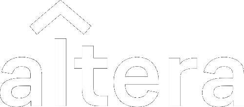
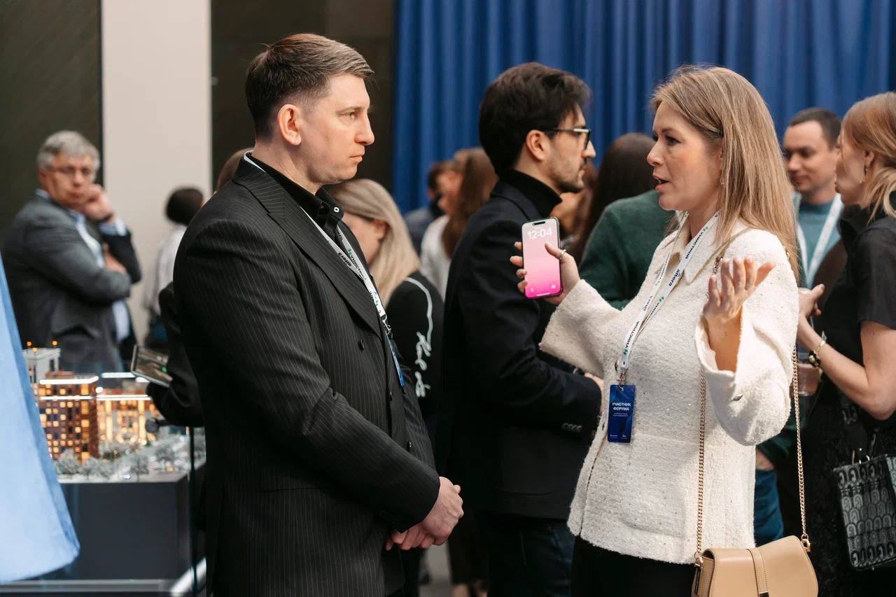
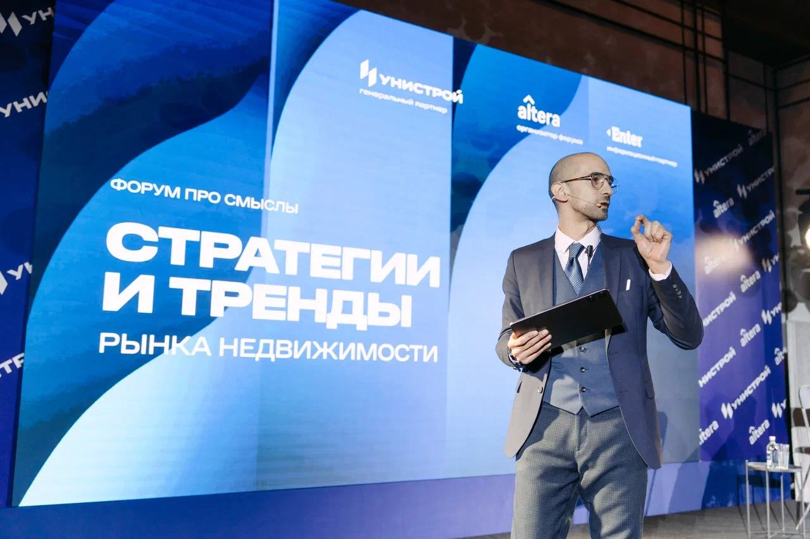
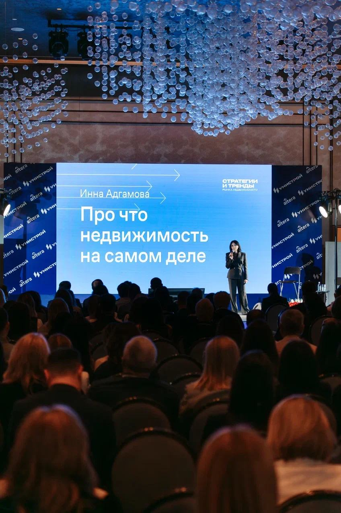
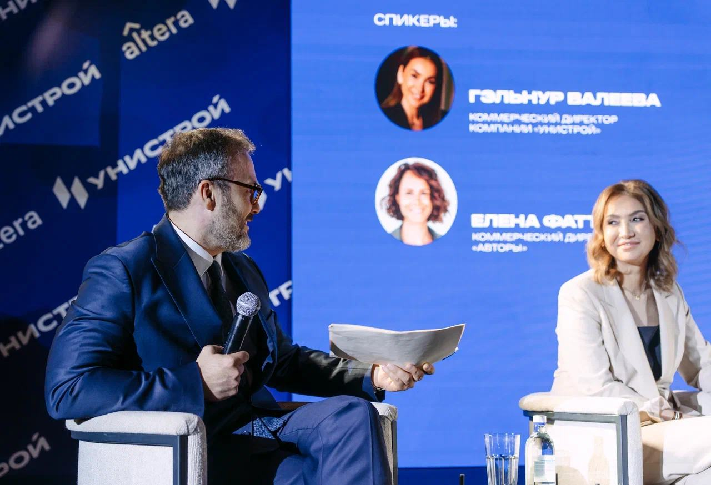
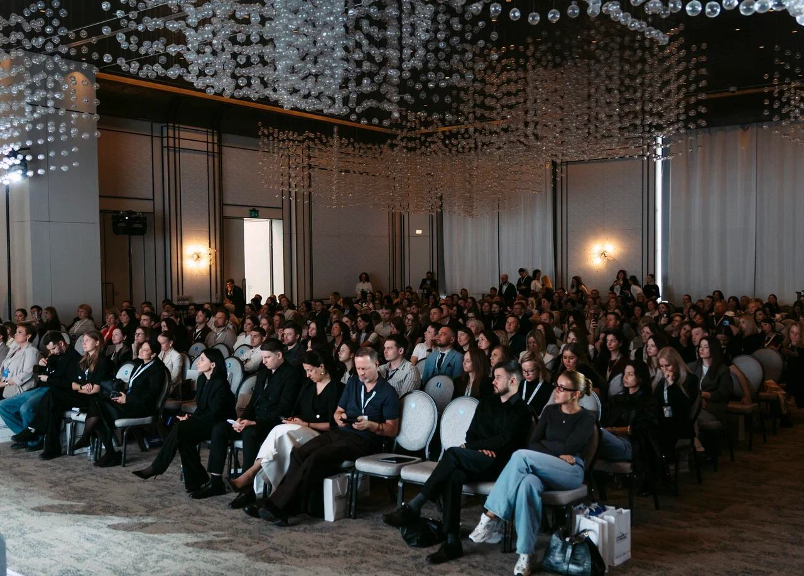

Участвовать ↗




Стратегии и тренды
рынка недвижимости
II форум «Альтеры»
Рынок меняется.
Встретимся,
чтобы обсудить
что дальше.
Альтера собирает агентства недвижимости, застройщиков, брокеров и партнёров, чтобы обсудить, куда движется рынок.
Новые знакомства. Общий взгляд на то, что дальше.
Посмотреть программу ↗В центре
обсуждения
16–17 апреля 2027
Предварительные направления программы
Рынок и регионы+
Федеральная повестка и региональная практика. Содержание сессии уточняется.
Банки и ипотека+
Ипотечные программы и взаимодействие участников рынка. Содержание сессии уточняется.
Девелопмент и качество+
Взгляд застройщиков и профессионалов рынка. Содержание сессии уточняется.
Технологии и бизнес+
IT-технологии и инструменты для бизнеса. Содержание сессии уточняется.
Расписание и состав спикеров готовятся к анонсу.
Первый форум / 2026
За каждой идеей —
люди.
Стать частью
события
Партнёрство с форумом
Форматы участия партнёров и условия готовятся к анонсу.
Казань / 16–17 апреля 2027
Увидимся
на форуме.
IT-парк имени Башира Рамеева